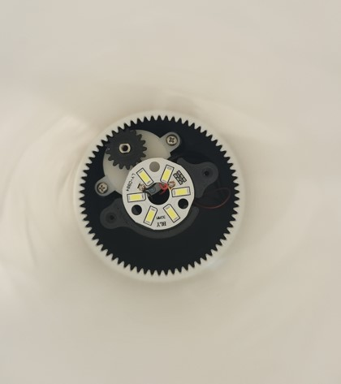
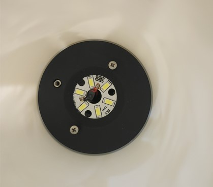

Custom Lamps
 
A lithophane is a unique type of artwork or decorative piece created using a specialized technique that transforms a flat image into a three-dimensional relief when illuminated from behind. Using 3D printing, and very detailed settings, it is possible to make custom pieces of home decor.
My goal was to make a marketable product that stood out, and could be assembled easily. I sourced and tested a variety of simple electronics to determine the best fit for this product. I then designed a lamp base that could house a motor and led, while having a seamless and clean exterior.